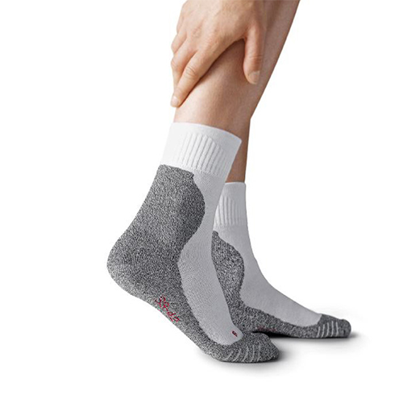

Loopsokken
Deze loopsokken zijn ontworpen om tijdens een loopactiviteit optimaal comfort te kunnen garanderen. Ze zijn geschikt voor zowel korte en lange afstanden. De microscopisch kleine gaatjes in het textiel zorgt voor het voorkomen van zweetvoeten, zodat u ook daarvan geen last van zal hebben.
Kenmerken
- Kleur
- Wit en grijs
- Patroon
- Geen patroon
- Beschikbaar in maten
- 37 - 42
- 43 - 48
- Ideaal voor
- Hardlopen